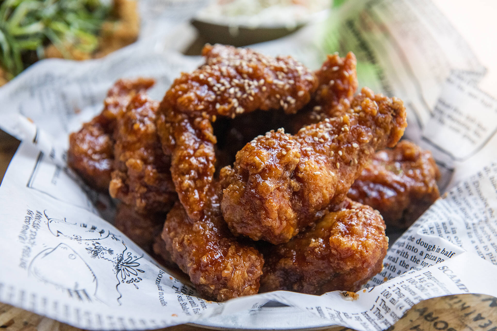

Korean Fried Chicken

Description
Korean fried chicken is one of my favorite dishes simply because it is crunchy and tasteful.
This recipe features the most basic and standard korean fried chicken, however, there are
many many more variations or sauces that you can add to it.
This recipe is from
Allrecipes.
Ingredients
Marinade:
- 1 pound skinless, boneless chicken thighs, quartered
- ½ yellow onion, grated
- 4 cloves garlic, minced
- 1 teaspoon fine salt
- ½ teaspoon freshly ground black pepper
Batter:
- ¾ cup cornstarch
- ½ cup self-rising flour
- 1 teaspoon white sugar
- ½ teaspoon ground black pepper
- ¼ teaspoon salt
- 1 cup very cold water, or as needed
- oil, or as needed
Steps
- Stir chicken, onion, garlic, fine salt, and 1/2 teaspoon black pepper together in a bowl until chicken is coated. Cover the bowl with plastic wrap and refrigerate, 4 hours to overnight.
- Heat oil in a deep-fryer or large saucepan to 340 degrees F (171 degrees C).
- Whisk cornstarch, flour, sugar, 1/2 teaspoon black pepper, and 1/4 teaspoon salt together in a large bowl. Gradually whisk ice water into flour in until mixture resembles a smooth pancake batter. Transfer chicken to batter and stir to coat chicken completely.
- Working in batches, cook chicken in preheated oil for 4 minutes. Transfer cooked chicken to a cooling rack.
- Increase oil temperature in the deep-fryer or large saucepan to 375 degrees F (190 degrees C).
- Working in batches, cook chicken again in hot oil until golden brown and crispy on the outside, 3 to 4 minutes. Transfer to a wire rack to drain.